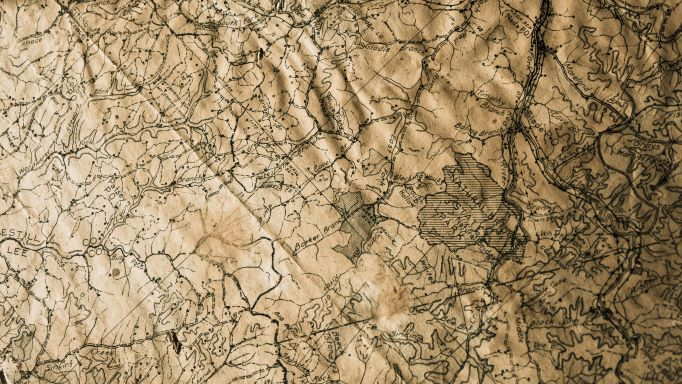

Saftey Tips

Don’t forget to snack: When you sweat, you lose electrolytes, which can sap your energy. If your activity lasts for only an hour or less, this usually isn’t an issue, but when you’re out for longer it’s important to compensate for the loss. Snack foods with sodium and potassium can help, as will foods with calcium and magnesium. For an extended, high-intensity activity, also consider bringing an electrolyte replacement sports drink. Drink more at altitude: Doing any activity at higher altitude can lead to dehydration. You’re less likely to crave water and feel thirsty at higher elevations, so it’s important to drink frequently.Drink even in cold weather: You may not feel like taking a swig of cold water on a winter day, but it’s just as important to stay properly hydrated in cold weather as it is in hot weather. Packing along a hot drink can be a good way to keep yourself hydrated. Pre-hydration: In most cases, this isn’t necessary. For a sustained high-exertion activity, though, consider drinking about 16 fl. oz. two hours before heading out. Rehydrate: Drinking after exercise gets your fluid levels back to normal and can help with recovery. This can be as simple as drinking a glass of water when you get home, or if you want to get scientific about it, drink 16–24 fl. oz. of water for every pound you lost while exercising.
It can be dangerous for pets to spend excessive time outdoors in higher temperatures, so make sure you understand your pet's abilities and pay attention to their behavior. Pets heat up and cool off differently than humans, so don't base their health level on how you're feeling. Heatstroke can be life-threating for pets and they need plenty of water and shade to stay cool. For signs and treatment of heatstrokes, check out the Humane Society's guide to keeping pets safe in the heat
Plan your route: Water weighs a lot (16 fl. oz. is just over a pound), so if you want to avoid carrying extra weight on a run or bike ride, plan a route that will take you by a water fountain where you can drink or refill a bottle. Another option is to use your car like an aid station and plan an outing that does loops from your vehicle. You can stop at your car to refill a water bottle and grab a quick snack.